Eu construo. É o que eu sempre fiz — só mudou a ferramenta.
Primeiro foi uma clínica. Depois, um método. Depois, cursos, palcos, lançamentos digitais que chegaram a profissionais do Brasil inteiro. Agora é a Zatheon — o ecossistema de IA aplicada à saúde que une tudo que as fases anteriores me ensinaram: saúde por dentro, venda na prática, ensino que funciona.
Cada capítulo desta página existe por uma razão: mostrar que o que eu estou construindo agora não caiu do céu. Foi construído em camadas — e cada camada está documentada em foto.
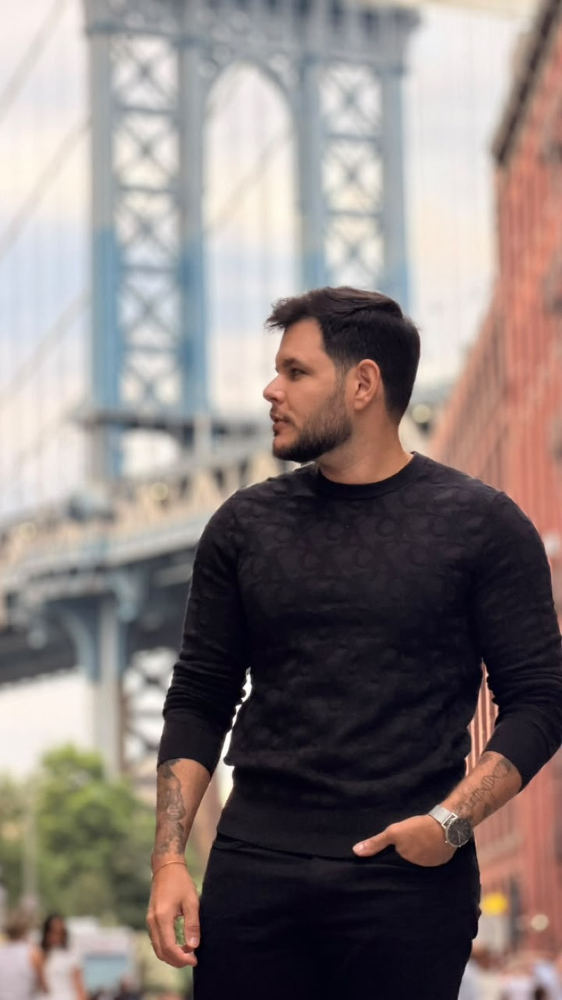
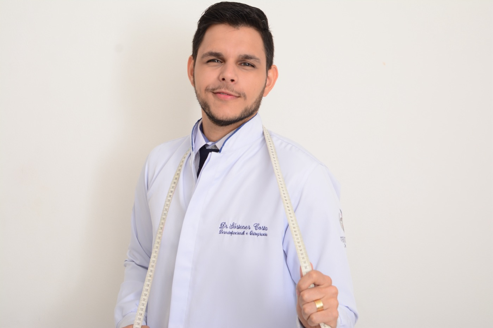
A clínica que virou escola: o método SOS.
Eu já era fisioterapeuta — formado pela Universidade Potiguar, com pós em fisioterapia dermatofuncional — e trabalhava de dia num banco, a Caixa Econômica, aprendendo na marra o que faculdade nenhuma ensina: atender gente, vender, resolver. À noite e nos fins de semana, eu construía o meu negócio.
Dessa construção nasceu o SOS Emagrecimento Comportamental: um método que trata o emagrecimento pela raiz que ninguém queria encarar — o comportamento. Três etapas:
O método virou atendimento. O atendimento virou a minha clínica de saúde e estética em Mossoró — a Dr. SOS — com protocolos, equipe e uma esteira de cuidado que ia do emagrecimento à estética avançada. Criolipólise, ondas de choque, eletroterapia: eu operava cada equipamento e escrevia cada protocolo.
E aí aconteceu uma coisa que eu não planejei: as pessoas começaram a pedir pra aprender comigo. Profissionais da saúde queriam o método, queriam os protocolos, queriam saber como a clínica funcionava por dentro. A demanda pelo online veio antes de eu ir atrás dela.
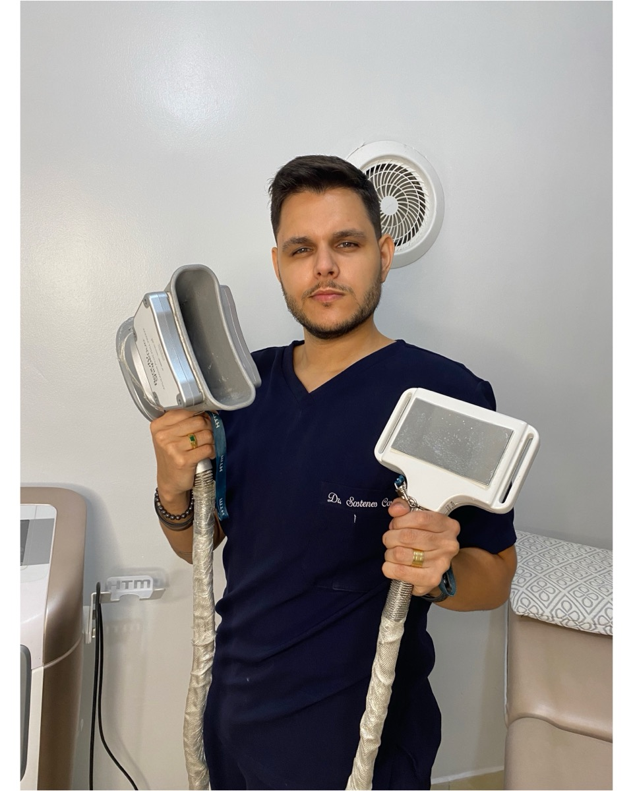
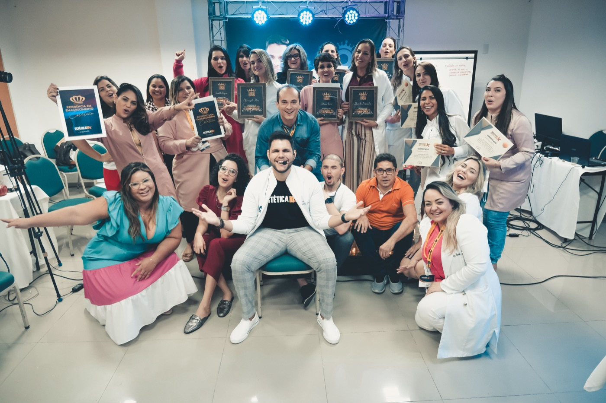
Virei professor — e depois aprendi a lançar.
Agosto de 2021: cada pessoa nessa foto confiou o negócio dela ao meu método — e saiu formada. Esse é o tipo de orgulho que não prescreve.
Desde 2018 eu escrevo apostila, monto curso, dou aula. Comecei ensinando o que dominava: limpeza de pele, protocolos de estética, eletroterapia, ondas de choque. Cada turma me ensinava a ensinar melhor.
Quando o online abriu a porteira, eu entrei de vez no mundo dos lançamentos digitais. Estudei o jogo a sério — me formei em marketing pela V4 Company em 2022 — e construí, lançamento a lançamento, uma esteira de formações que já ajudou profissionais de estética do Brasil inteiro: a Estética 10X, a formação em harmonização corporal, a Máquina de Agendamento no WhatsApp, o Desafio Mente Magra, mentorias individuais e em grupo.
O que essas fotos não mostram é o custo de cada uma. Mesmo com um sócio de agência cuidando do tráfego e desenhando a estratégia comigo, quase tudo o mais passava por mim: o conteúdo, as páginas, o produto, as aulas, o suporte, a entrega. Do lançamento à última aluna atendida — uma operação inteira nas costas de uma pessoa. Foi ali, exausto entre um CPL e uma turma nova, que nasceu a pergunta que hoje virou empresa: por que não existe uma ferramenta que faça por esse profissional o que eu precisei fazer sozinho?
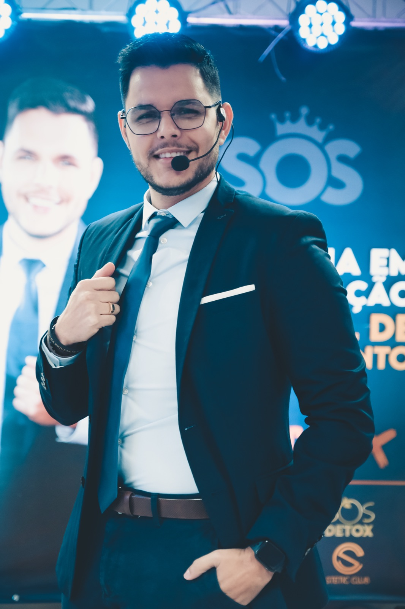
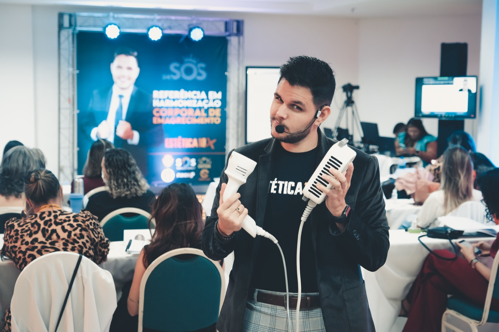
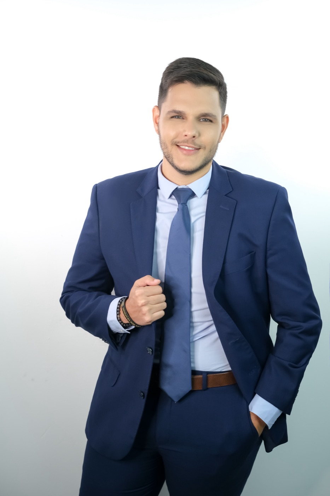
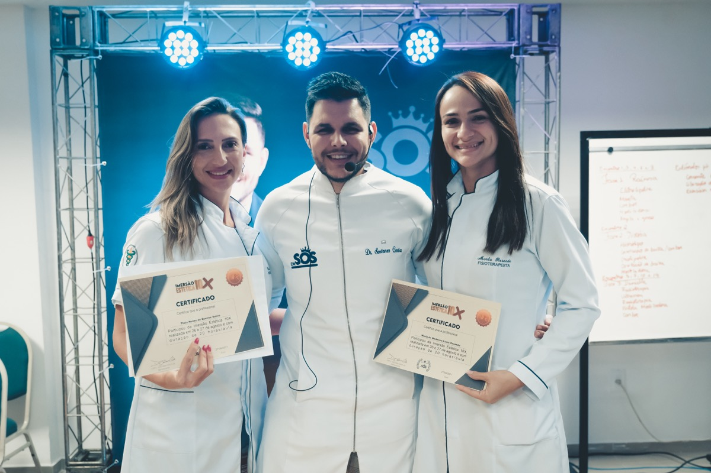
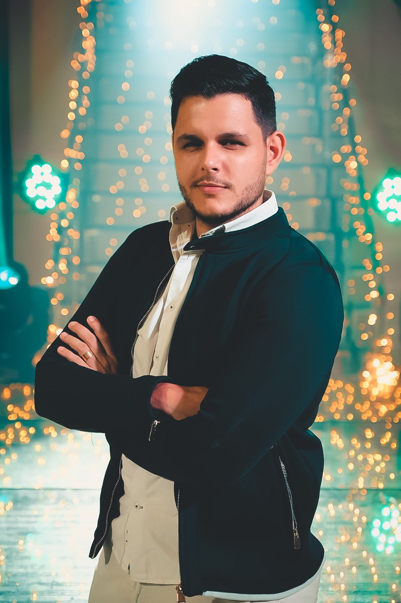
- Formação em Harmonização Corporal de Emagrecimento — Estética10X curso
- Bases da Estética10X curso
- Máquina de Agendamento no WhatsApp 5 em 7 curso
- Imersão Intradermo10X na Prática curso
- SOS Detox Ortomolecular curso
- SOS FlaciUP curso
- Hidrolipo curso
- Atualização em Criolipólise e Criotermogênese curso
- Mentoria Individual com Dr. Sóstenes consultoria
Essa fase me deu algo que pouca gente da saúde tem: anos de prática real em marketing, copy, funil e venda — não a teoria, a operação. Eu escrevi as páginas, gravei os CPLs, montei as ofertas, olhei as métricas às 2h da manhã. Errei muito, ajustei sempre.
Sem essa fase, nada do que veio depois existiria.
Por que emagrecimento? Porque a primeira transformação foi a minha.
Tem uma história pessoal correndo em paralelo a tudo isso — e é ela que explica por que o método nasceu no emagrecimento, e não em qualquer outro lugar.
Eu cresci em Mossoró sendo o gordinho da família. Praia, pra mim, era o lugar de ficar de camisa enquanto todo mundo entrava na água. Fiz dieta atrás de dieta, vivi o efeito sanfona — que não maltrata só o corpo, maltrata a esperança — e tomei a decisão que parecia definitiva: a cirurgia bariátrica. Funcionou. Por um tempo. Dois anos depois, a balança tinha me devolvido quase 20 quilos.
Eu tinha operado o estômago — mas ninguém tinha operado a minha cabeça. Foi estudando o que aconteceu comigo que eu entendi que o problema era comportamento. Dessa ficha caída nasceu o SOS. A minha dor virou o meu produto — e depois virou resultado na vida de muita gente.
Comportamento não se corta com bisturi — se reprograma. Essa frase me transformou primeiro, e depois virou método.
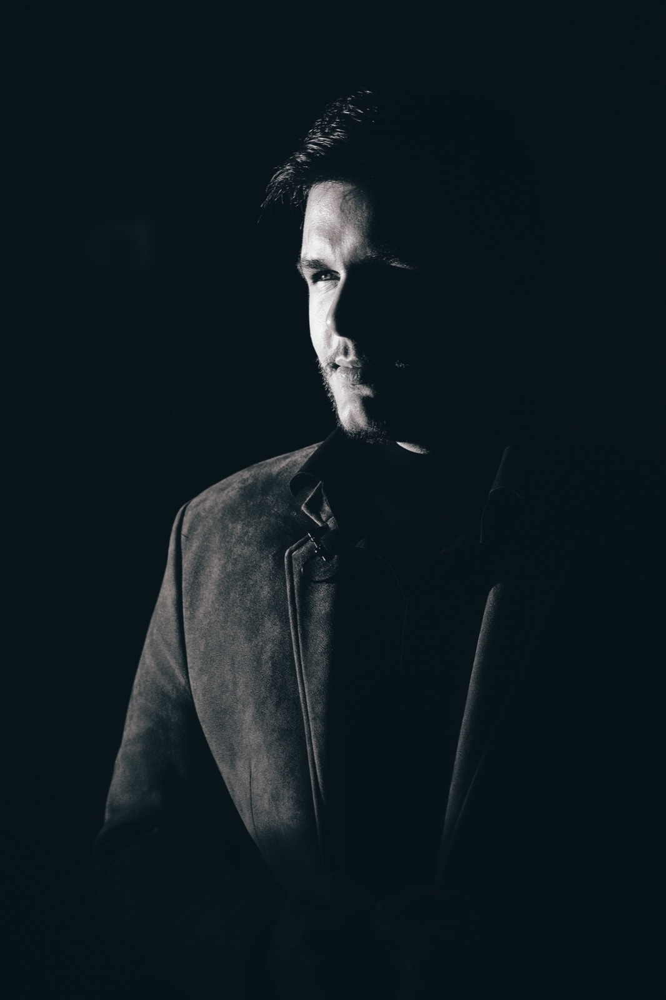
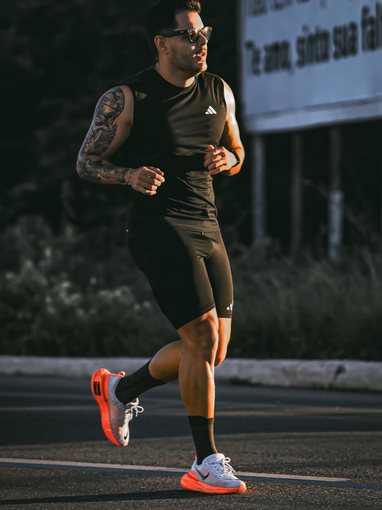
Biomédico e fisioterapeuta: ciência e mão na massa, no mesmo corpo.
Sou biomédico e fisioterapeuta. Duas graduações completas — Fisioterapia pela Universidade Potiguar, Biomedicina pelo Centro Universitário UNIBTA — e uma pós em fisioterapia dermatofuncional e estética. É essa combinação, a ciência do laboratório com a reabilitação de gente de verdade, que sustentou cada resultado no emagrecimento e na estética — e é ela que hoje me deixa construir tecnologia para clínicas entendendo a clínica por dentro.
Em 2020, no auge da pandemia, servi como fisioterapeuta no serviço público de saúde do Rio Grande do Norte. Em 2025, comecei Medicina na Europa — e em 2026 tomei uma das decisões mais difíceis da minha vida: pausei o curso no segundo ano.
Não porque desisti da saúde. Porque eu vi uma janela se abrindo que não ia esperar seis anos de faculdade: a inteligência artificial estava mudando a medicina agora, na minha frente. E parece que a gente tem que seguir aquilo que as pessoas esperam da gente — o diploma, a linha de produção profissional. Eu escolhi o caminho fora da média.
Credencial importa — e as minhas me deram o chão. Mas quem decide o impacto que você causa não é o título. É a coragem de construir.
A aposta: IA aplicada à saúde — de verdade, não de modinha.
Eu não gosto de modinha. Quando eu decidi mergulhar em IA, não foi pra postar print de robô — foi pra responder uma pergunta que me persegue desde a clínica: por que o cuidado em saúde ainda perde tanto tempo, tanto paciente e tanta oportunidade em processo manual?
Então eu fiz o que fiz a vida inteira: virei aluno de novo. Estudo diário, certificação pela Anthropic em 2026, e a regra que rege tudo que eu construo — a IA que importa não é a que impressiona em demo, é a que melhora o serviço final: o paciente melhor atendido, a agenda cheia, a clínica que não depende de indicação.
Uma coisa eu trouxe intacta da minha história: método. Do mesmo jeito que o SOS desprograma, reprograma e implementa comportamento, eu aplico IA em cima de problema real, testo pequeno, meço e só então escalo. Fui apresentado ao mundo de possibilidade através do estudo — e é pelo estudo que eu continuo entrando nas salas onde o futuro é construído.
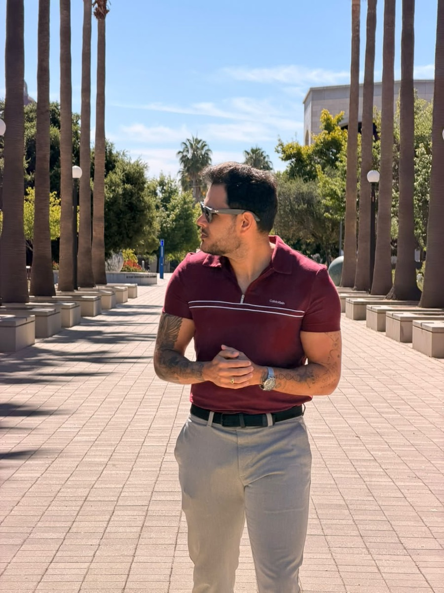
A trajetória, em fotos.
Deslize — cada quadro é um capítulo real. O histórico completo está no LinkedIn.
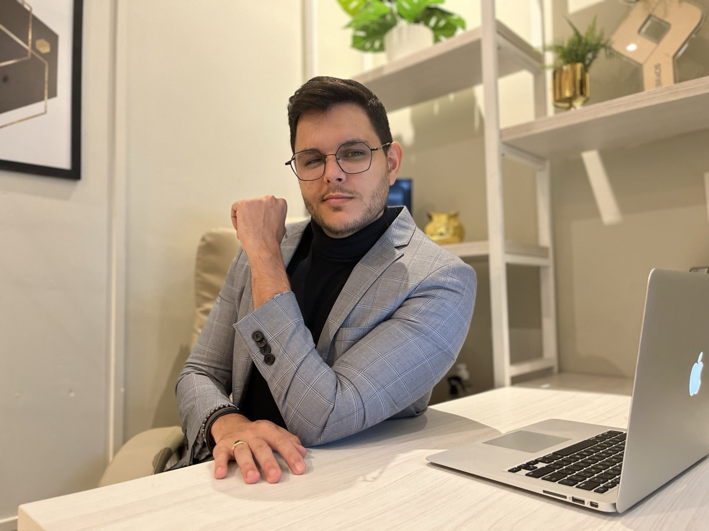
45 dias no Vale do Silício, construindo em público.
Enquanto você lê isso, eu estou em San Francisco, numa imersão de 45 dias no coração da IA mundial — conhecendo fundadores, entrando em eventos, testando ferramenta no dia em que ela lança. E documentando tudo, um vídeo por dia, no @drsostenes, onde mais de 30 mil pessoas acompanham essa jornada.
Não vim passear. Vim construir a Zatheon — o ecossistema que une tudo que essa história me ensinou: saúde por dentro, venda na prática, ensino e IA aplicada.
E o propósito é um só: construir o que eu queria ter tido. A ferramenta que facilite a vida do profissional de saúde que quer empreender, se desenvolver, crescer — vender seus serviços, seus cursos, suas mentorias, inspirar pessoas e escalar. O que eu fiz sozinho, madrugada adentro, ninguém mais deveria precisar fazer sozinho.
O profissional que começou numa clínica no interior do RN hoje constrói o próprio futuro em público, com o mundo assistindo. Não porque ficou fácil — porque eu aprendi, em cada fase, que o próximo nível se constrói com a coragem de recomeçar como aluno.
Stanford, 2026 — a nova fase da jornada.
"Não deixe virar normal aquilo que um dia, para você, parecia um milagre."
— Sóstenes Costa Paiva, biomédico, fisioterapeuta e fundador da Zatheon